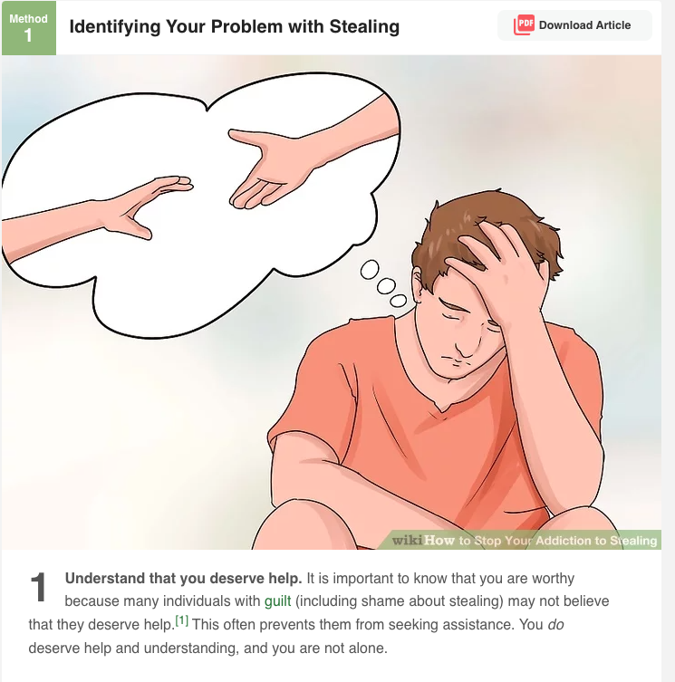
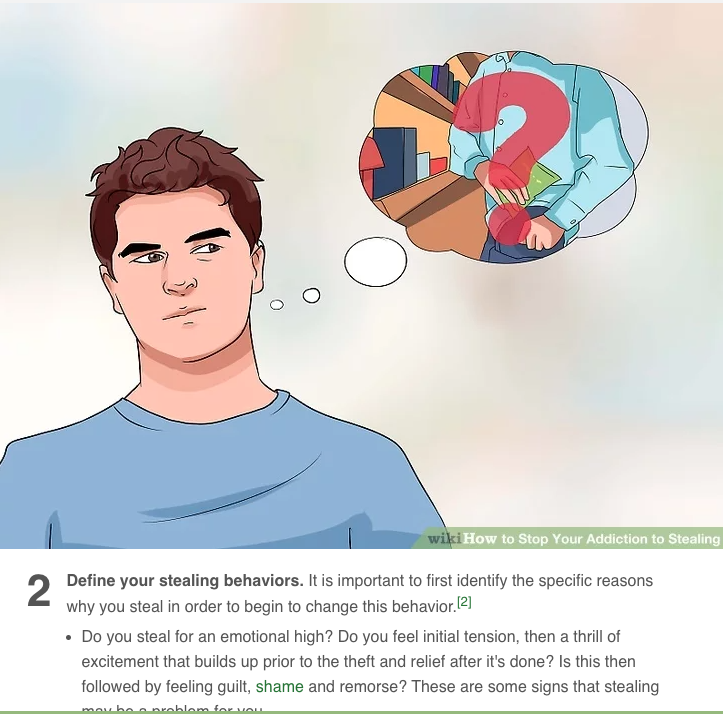
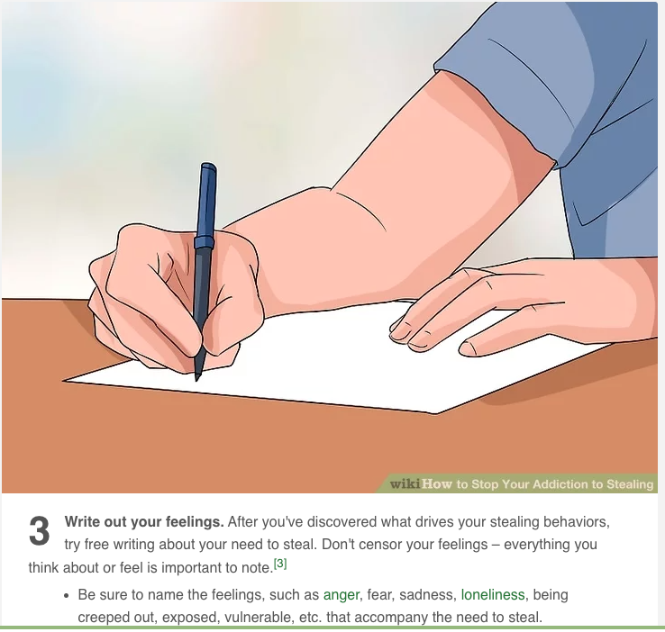
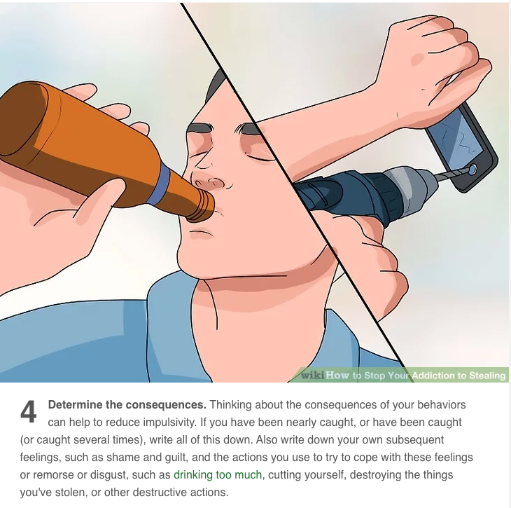
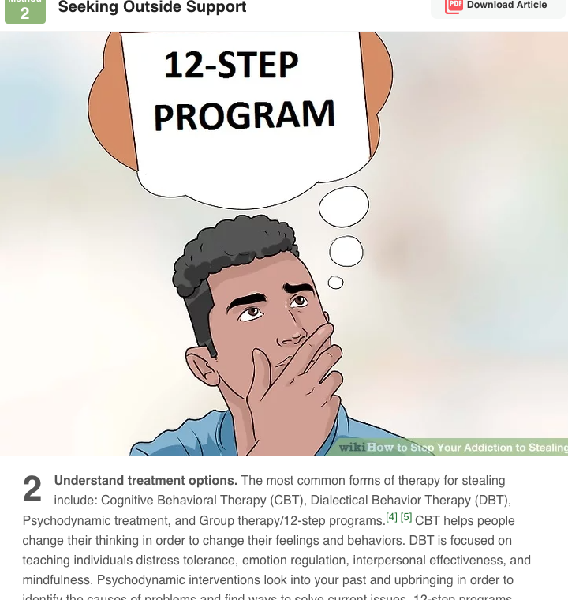

HOME

FARMER ON FARMER
Your browser does not support the audio element.

FARMER ON LAUPER
Your browser does not support the audio element.

BUILDING VIOLINS IS BEAUTIFUL

BEETHOVEN FREEZE
Beethoven Freeze
·
BEETHOVEN FREEZE
WORK FOR HARPSICHORD OFFICIAL MUSIC VIDEO
